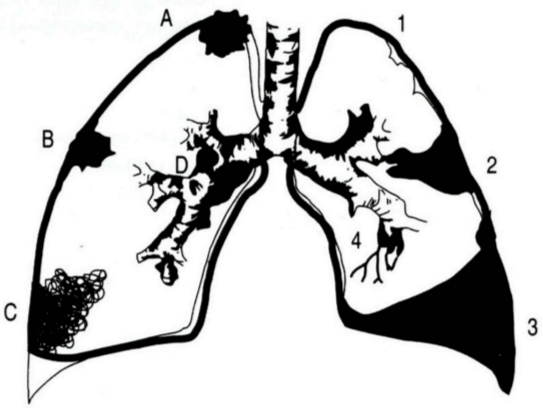
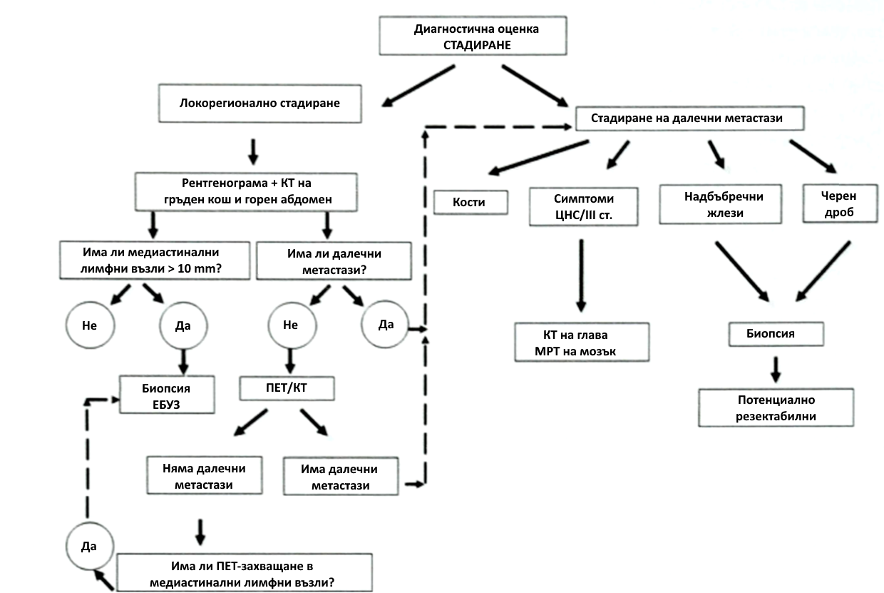

БЕЛОДРОБЕН КАРЦИНОМ
Епидемиология
По данни на СЗО, карциномът на трахеята, бронхите и белите дробове е водеща причина за смърт в Европейския регион (3.9% от общата смъртност).
В България:
- Ракът на белите дробове е най-честото злокачествено заболяване при мъжете (19.3%) и пето по честота при жените (5.3%).
- Годишно се диагностицират над 4000 нови случая.
- Смъртността е по-голяма от тази, причинена от рак на млечната жлеза, дебелото черво и простатата, взети заедно.
Рискови фактори
- Тютюнопушене: Рискът се увеличава с броя на цигарите и пакето/годините. Отказът на всяка възраст може значително да намали риска.
- Пасивно тютюнопушене.
- Излагане на газ радон: Продуцира се от естествения разпад на уран в почвата, скалите и водата, който в крайна сметка става част от въздуха, който дишаме. Навлиза в сградите чрез малки пукнатини в основите им.
- Излагане на азбест и други канцерогени: Като арсен, хром, никел, кадмий и петролни продукти, особено при пушачи.
- Фамилна анамнеза за рак на белия дроб.
- Хронични белодробни заболявания – белези от туберкулоза, хроничен бронхит, ХОББ.
Патогенеза
Развитието е вероятно в резултат на въздействие върху бронхиалния епител на различни карциногенни вещества, активиращи реакции, които предизвикват степенни, до мутагенни процеси и неконтролируемо размножаване на атипични клетки.
- Генни мутации:
- Мутация в K-ras прото-онкогени е отговорна за 10-30% от белодробните аденокарциноми.
- Мутация в EML4-ALK тирозинкиназа се среща в 4% от недребноклетъчните белодробни карциноми.
- EGFR (Рецептор на епидермалния растежен фактор): Играе роля в регулирането на клетъчното размножаване, апоптозата, ангиогенезата и туморната инвазия. Генетичните мутации, водещи до дисрегулация му, обикновено се наблюдават при недребоклетъчен белодробен карцином, което обяснява използването на EGFR-инхибитори при лечението на заболяването.
- Наследствен генетичен фактор: Приблизително 8% от случаите, с относителен риск 2.4 пъти по-голям за индивиди с роднини с болестта. Полиморфизмите на хромозома 6 и 15 са свързани с повишен риск.
Класификация по Локализация
- Централен: Локализиран в главни, лобарни и сегментни бронхи (ендоскопски достъпен).
- Перибронхиоларен
- Ендобронхиоларен.
- Периферен: Разположен дистално от сегментните бронхи. Трудно се доказва с ендоскопска техника, а локализацията до гръдната стена го прави по-достъпен за ТТАБ (трансторакална аспирационна биопсия).
- Особена форма е този на Панкоаст-Тобиас (Фиг. 1).

Фигура 1. Схематично представяне на топографията (десен бял дроб) и усложненията (ляв бял дроб) при белодробен карцином. А-върхов (Панкоаст-Тобиас); В-периферен карцином; С-пневмонична форма; D-централен карцином; 1-емфизем; 2-ателектаза; 3-плеврален излив; 4-бронхиектазии.
Клинична класификация (Важна за избор на поведение и лечение)
Недребноклетъчен карцином (НДК)
- 75-80% от белодробния карцином.
- Плоскоклетъчен карцином:
- Най-честият хистологичен тип. Свързан с тютюнопушенето.
- Локализира се централно, до големите въздухоносни пътища.
- Обикновено се представя с плътно хомогенно засенчване на пулмографията, но може да разпадне и да изглежда рентгенологично като абсцес.
- Често се представя с хиперкалциемия.
- Аденокарцином:
- Не е задължително свързан с тютюнопушенето.
- Развива се от алвеоларните и бронхиоларните жлезни клетки.
- Локализира се типично като периферно разположена маса.
- Може да бъде първичен белодробен или вторичен от други места, особено когато е налице инфилтрация на плеврата и последващ плеврален излив.
- Алвеоларен клетъчен карцином: Рядък. Може да причини обилно отделяне на спутум (бронхорея) и инфилтративни засенчвания на пулмографията.
- Други: Едроклетъчен карцином, Аденосквамозен карцином и Саркоматоиден карцином.
Дребноклетъчен карцином (ДКК)
- 20-25% от белодробния карцином.
- Само в 1% се среща при непушачи.
- Обикновено е метастазирал по време на диагнозата (хематогенни разсейки).
- Често метастазира в: черен дроб, кости, костен мозък, главен мозък, надбъбречни жлези и др.
- Хирургията обикновено не е подходяща.
- Химио- и радиочувствителен.
- Изключително агресивен: Нелекуваният ДКК има средна преживяемост от 6 седмици.
Допълнителни Прогностични Фактори и Типизиране
- Хистопатологична степен (grading): От 1 до 4 (G) – определя диференциацията (високо, умерено, нискодиференциран и недиференциран карцином), има прогностична стойност.
- Състоянието на резекционни линии и хистологично изследване на лимфни възли, добити чрез системна медиастинална лимфна дисекция: Определя се след хирургична резекция. Незадължителни описания: лимфна (L), венозна (V) и периневрална инвазия (Pn).
- Имунохистохимично изследване: Препоръчва се за разграничаване на първичен белодробен аденокарцином от метастатичен аденокарцином, на хистологични подтипове на нискодиференцирани белодробни карциноми, на белодробен аденокарцином от плоскоклетъчен карцином и мезотелиом и за определяне на невроендокринен статус на туморите
Молекулярно-патологично типизиране
Целта на тестването за EGFR-мутации и ALK-пренареждане е да се идентифицират пациенти, които могат да получат таргетна терапия като лечение от първа линия.
- Механизъм: Таргетните лекарства (напр. тирозин-киназни инхибитори – TKI) са високоспецифични: те блокират протеините, произведени от тези мутирали гени, които са жизненоважни за растежа на раковите клетки.
- Предимство: Таргетната терапия е по-ефективна и по-добре поносима от стандартната химиотерапия при наличие на тези мутации.
- Приложение: Тестването е критично за избор на лечение при напреднало заболяване (IIIB-IV), тъй като ранните стадии (I и II) се лекуват предимно хирургично.
- Таргетен тип карцином: Тестването се препоръчва основно при Недребноклетъчен Белодробен Карцином (НДК), тъй като тези мутации са рядкост при дребноклетъчния карцином.
- Препоръчват се при следните биопсично доказани варианти в стадий IIIB-IV:
- аденокарцином
- недребноклетъчен белодробен карцином, фаворизиран като аденокарцином
- недребноклетъчен белодробен карцином - неопределен тип (NOS)
- смесен тип с аденокомпонента.
TNM Стадиране
Стадирането корелира с прогнозата и определя избора на лечение.
T (Първичен тумор)
- Tx: Първичният тумор не може да се оцени или тумор, доказан с наличие на туморни клетки в храчка или бронхиален съм при негативни образни изследвания и бронхоскопия.
- T0: Липсва първичен тумор.
- Tis: Карцином in situ.
- T1: ≤ 3 cm, заобиколен от бял дроб или висцерална плевра, не по-проксимално от дялов бронх:
- T1a(mi): Минимално инвазивен аденокарцином.
- T1a = тумор ≤ 1 cm.
- T1b = тумор > 1 но ≤ 2 cm.
- T1c = тумор > 2 но ≤ 3 cm.
- T2: > 3 но ≤ 5 cm или тумор с някоя от следните характеристики: нахлува във висцерална плевра, засяга главен бронх, независимо от разстоянието от карината, но без ангажиране на карината; ателектаза/обструктивен пневмонит, простиращ се до хилуса и включващ част от или целия бял дроб:
- T2a = тумор > 3 но ≤ 4 cm.
- T2b = тумор > 4 но ≤ 5 cm.
- T3: Тумор > 5 cm, но ≤ 7 см или свързан с отделни туморни възли в същия дял на първичния тумор или директно инвазиращ една от следните структури: гръдна стена (включително париетална плевра и тумори на горна бразда), френичен нерв, париетален перикард.
- T4: Тумор > 7 cm или свързан с отделен туморен възел(и) в различен лоб от този на първичния тумор или инвазиращ една от следните структури: сърце, големи съдове, трахея, възвратен ларингеален нерв, хранопровод, тяло на прешлен или бифуркация на трахея (карина).
N (Регионални лимфни възли)
- Nx: Регионални лимфни възли не могат да се оценят.
- N0: Без метастаза в регионален възел.
- N1: Метастаза в ипсилатерални перибронхиални и/или хилусни лимфни възли и интрапулмонарни възли, включително засягане чрез пряк растеж.
- N2: Метастаза в ипсилатерален медиастинален и/или лимфен(и) възел(и) под бифуркацията на трахея.
- N3: Метастаза в контралатерални медиастинални, контралатерални хилусни, ипсилатерални или контралатерални скаленни или супраклавикуларни лимфни възли.
M (Далечна метастаза)
- M0: Без далечна метастаза.
- M1: Наличие на далечна метастаза.
- M1a: Отделен туморен възел(и) в контралатерален дял; тумор с плеврален или перикарден възел(и) или малигнен плеврален или перикарден излив.
- M1b: Единична екстраторакална метастаза.
- M1c: Множествени екстраторакални метастази в един или повече органи.
Таблица 1. Групиране на стадии и подгрупи в съответствие с TNM
| СТАДИЙ | T | N | M |
| Окултен рак | Tx | N0 | M0 |
| 0 | Tis | N0 | M0 |
| IA1 | T1 (mi)
T1 a | N0
N0 | M0
M0 |
| IA2 | T1b | N0 | M0 |
| IA3 | T1c | N0 | M0 |
| IB | T2a | N0 | M0 |
| IIA | T2b | N0 | M0 |
| IIB | T1a-c
T2a
T2b
T3 | N1
N1
N1
N0 | M0
M0
M0
M0 |
| IIIA | T1a-c
T2a-b
T3
T4
T4 | N2
N2
M1
N0
N1 | M0
M0
M0
M0
M0 |
| IIIB | T1a-c
T2a-b
T3
T4 | N3
N3
N2
N2 | M0
M0
M0
M0 |
| IIIC | T3
T4 | N3
N3 | M0
M0 |
| IVA | Всяко T
Всяко T | Всяко N
Всяко N | M1a
M1b |
| IVB | Всяко T | Всяко N | M1c |
Клинична картина
Без симптоми: в до 25% от случаите
Локални туморни ефекти:
- Постоянна кашлица или промяна в характера на кашлицата.
- Хемоптиза - типично с вид на "малиново желе."
- Болки в гръдния кош - при ангажиране на плеврата или гръдната стена.
- Нерезорбираща се пневмония или лобарна ателектаза.
- Необяснима диспнея (в резултат на бронхиално стеснение или обструкция).
- Дисфония/афония - при туморна инвазия и засягане на левия n.reccurens.
- Дисфагия - при компресия на хранопровода.
- Плеврален излив - при директна инвазия на тумора или плеврални метастази.
- Високо стоящ диафрагмален купол - при парализа на n.phrenicus.
- Синдром на Claude Bernard-Homer (птоза, миоза, енофталм) в резултат на ангажиране на шийната част на n.sympaticus от върхов или Pancoast-Tobias тумор.
- Pancoast туморът може директно да обхване разклоненията на n.sympaticus в шийната област, брахиалния плексус и ребрата, причинявайки слабост на малките мускули на ръката и болки в рамото.
- Ако е обтуриран голям бронх, е възможно да се развие пневмония или абсцес.
Метастатични туморни ефекти:
- Шийна/супраклавикуларна лимфаденопатия (налице при около 30% от болните - достъпно място за диагностична биопсия).
- Хепатомегалия - чернодробни метастази.
- Болки/патологични фрактури на костите - костни метастази.
- Неврологична симптоматика – мозъчни метастази (главоболие, гадене, огнищен дефицит)..
- Хиперкалциемични ефекти (в резултат на костни метастази или директна туморна продукция на паратироиден хормон).
- Дисфагия вследствие на компресия от големи медиастинални лимфни възли.
Паранеопластични синдроми (от продукцията на хормонподобни субстанции):
- Най-честият при ДКК: Синдром на Иценко-Кушинг (при повишена ектопична секреция на АСТН).
- Най-честият при НДК: Свързан с продукция на субстанция, подобна на паратироидния хормон, повишаваща нивата на калция в периферната кръв.
- Неспецифични симптоми:
- Кахексия
- Слабост
- Умора
- Депресия
Белодробният карцином трябва да се подозира при всеки пациент над 40 г. с персистираща кашлица, хемоптиза, или нерезорбираща се пневмония, особено при пушачи.
Диагноза
Кога е необходимо да се проведат изследвания:
- Нововъзникнала персистираща кашлица или влошаване на съществуваща кашлица.
- Кръвохрак.
- Персистиращи „бронхити" или чести респираторни инфекции.
- Гръдна болка.
- Необяснима загуба на тегло и/или умора.
- Диспнея или хриптене.
- Анамнеза за излагане на тютюнопушене и други рискови фактори.
Лабораторни и Функционални изследвания:
- Кръвни тестове: Вкл. натрий, калций, чернодробни показатели, изследване на кръвосъсирването при планирана биопсия.
- Спирометрия при предстоящо хирургично лечение.
- Цитологично изследване на храчка.
- Изследване на плеврален пунктат (биохимично, цитологично).
- Трансторакална тънкоиглена аспирационна биопсия (ТТАБ) под КТ контрол при периферно разположени тумори (цитилогично, хистологично изследване).
- Биопсия на периферен лимфен възел (хистологично изследване).
- Туморни маркери: Карциноембрионален антиген (СЕА), антидиуретичен хормон (АДХ) и др.
Образни изследвания:
- Рентгенография на бели дробове (фас и профил): За оценка на местоположението, ангажимента на плеврата, деструкция на ребра, интраторакални метастази, медиастинална лимфаденопатия.
- Незабавна при пациенти с кръвохрак.
- Препоръчителна при следните клинични симптоми, персистиращи повече от три седмици: кашлица или промяна в характера на хроничната кашлица, неясна гръдна болка, загуба на тегло, костни болки, задух.
- Компютъртомографско изследване (КТ) на гръден кош и горен абдомен: За оценка на големината, разположението на тумора и неговите метастази. КТ е задължителна стъпка за диагноза и TNM стадиране.
- Магнитно-резонансната томография (МРТ): Метод на избор за доказване/отхвърляне на метастатични лезии в кости, мозък и надбъбреци. Използва се и за оценка на Т- и N-стадий при тумор тип Pancoast.
- Позитрон емисионна томография (ПЕТ/КТ):
- Мултимодална техника (KT+PET).
- Сканирането с глюкозен аналог (FDG) се основава на засилен глюкозен метаболизъм в туморните клетки и представлява анатомично-метаболитен изобразяващ метод.
- Докато КТ ни представя анатомичните структури, ПЕТ измерва метаболитната активности и функцията на тъканите.
- Уместна при всички пациенти с НДК за търсене на далечни метастази преди избор на лечение.
Ендоскопски методи:
- Фибробронхоскопия: Ендоскопски оглед, БАЛ (бронхоалвеоларен лаваж), четкова биопсия, катетър биопсия, щипкова биопсия, трансбронхиална пункционна биопсия (при перибронхиален растеж/увеличени лимфни възли), трансбронхиална белодробна биопсия (при дисеминирани лезии).
- Автофлуоресцентна бронхоскопия: при осветяване със синя светлина нормалната лигавица изглежда зелена, патологичните зони – морави. Препоръчва се при тежка дисплазия, карцином in situ или суспектни туморни клетки в храчка при нормална образна диагностика.
- Ендоскопски ендобронхиален ултразвук (ЕБУЗ) с трансбронхиална аспирационна биопсия и езофагеален ултразвук (ЕУЗ) с трансезофагеална аспирационна биопсия: Прилагат се за диагностично уточняване на увеличени медиастинални лимфни възли и за медиастинално стадиране при НДК. Могат да заместят медиастиноскопията.
Хирургични методи:
- Видеоасистирана торакоскопия (VATS)
- Медиастиноскопия
- Експлоративна торакотомия

Съкращения: КТ - компютър-томография. ЕБУЗ - ендобронхиален ултразвук. ПЕТ/КТ - позитрон-емисионна томография компютър-томография. МРТ - магнитно-резонансна томография. ЦНС - централна нервна система.
Фигура 2. Алгоритъм за диагноза и стадиране на БК (модификация по С.Frank).
Диференциална Диагноза
- Туберкулоза
- Саркоидоза
- Силикоза
- Пневмонии
- Белодробен абсцес
- Гъбични инфекции
- Белодробни кисти
- Бронхиектазии
- Метастази с извънбелодробен произход
Терапия на Белодробния Карцином
Бива:
- Радикална (свързана с отстраняване или унищожаване на тумора)
- Палиативна (намаляваща болката и страданието на пациента).
Видът на лечението се определя от:
- Тип (дребноклетъчен, недребноклетъчен) на карцинома.
- Размера и позицията на рака.
- Стадия на развитие.
- Оценката на здравния статус на пациента. Най често той се оценява посредством скалата на ECOG:
- 0 - норма, способен на нормални дейности.
- 1 - с наличие на симптоми, но амбулаторен, на домашен режим с поносими туморни прояви.
- 2 - с инвалидизиращи туморни прояви, но под 50% от времето на легло.
- 3 - тежко инвалидизиран с над 50% от времето на легло.
- 4 - тежко болен, 100% от времето е на легло.
- 5 - смърт.
Хирургично лечение
- НДК Стадий I и II: Осъществява се лобектомия или пулмонектомия, придружени от системна лимфна дисекция (конвенционална или VATS). При ограничени респираторни резерви в стадий I е допустима сублобарна резекция.
- ДКК: Не се препоръчва рутинно хирургично лечение.
- При всеки пациент с малигнен плеврален излив се прилага диагностична торакоцентеза и се обсъжда избор на плеврален дренаж с талкова плевродеза.
Лъчелечение
- Самостоятелно радикално лъчелечение.
- Предоперативно (неоадювантно) и следоперативно (адювантно) лъчелечение.
- Профилактично краниално лъчелечение при ДКК.
- Палиативно лечение при метастази в мозъка, костите, при компресия на гръбначен мозък и при синдрома на горна празна вена.
- Стереотактична радиотерапия: Роботизиран четириизмерен метод за високодозово лъчелечение, алтернатива на конвенционалната хирургия, особено при възрастни (над 65-70 години). Ефективен е в ранен стадий с диаметър на тумора до 20 mm и негативен нодален статус (N0). Радиохирургията дава възможност за палиативно лъчелечение на метастази, които са в непосредствена близост до жизненоважни органи на пациента.
Химиотерапия
В зависимост от етапа на недребноклетъчен рак на белия дроб и други фактори, химиотерапията може да се използва в различни ситуации:
- Като основно лечение (понякога заедно с лъчетерапия) за по-напреднали ракови заболявания или при болни с противопоказания за оперативно лечение.
- Заедно с лъчетерапия (съпътстваща терапия) за някои видове рак, които не могат да бъдат отстранени чрез хирургична намеса, тъй като са прорастнали във важни близки структури.
- Преди операция (понякога заедно с лъчева терапия) с цел редукция обема на тумора: неоадювантна терапия.
- След операция (понякога заедно с лъчева терапия) с цел да се убият всички ракови клетки, които може да са останали в организма: адювантна терапия.
Таргетна лекарствена терапия
Таргетната терапия се фокусира върху специфични аномалии, налични в раковите клетки. Блокирайки тези аномалии, таргетните медикаменти могат да доведат до смърт на раковите клетки. Някои таргетни терапии действат само при хора, чиито ракови клетки имат определени генетични мутации (EGFR-мутации, ALK-пренареждане).
Имунотерапия
Имунотерапията използва имунната система за борба с рака. Имунната система е неефективна, защото раковите клетки произвеждат протеини, които заслепяват клетките на имунната система. Имунотерапията действа, като се намесва в този процес. За пълно активиране на Т клетката се използват т.нар. "check-point" инхибитори (Anti-PD-1, Anti-PD-L1 и Anti-CTLA-4).
Лечение на Недребноклетъчния Карцином (НДК)
- Стадий I и II:
- Хирургичното лечение е на първа линия. Химиотерапията и постоперативното лъчелечение нямат място при заболяване в IA стадий. Адювантна химиотерапия може да бъде полезна при селектирани случаи от стадий IB и, по-специално, ако туморът е > 4 cm.
- Стадий II: Хирургично лечение, последвано от адювантна химиотерапия. Предпочита се лобектомия. Сублобарни резекции са показани само при тумори < 3 cm, при пациенти с тежки нарушения на белодробната функция, напреднала възраст и изразена коморбидност.
- Лъчетерапията се прилага при пациенти с противопоказания за хирургично лечение.
- Стадий III А и III В: Комбинирана химиотерапия и лъчетерапия. Стандартната системна химиотерапия при болни с напреднал недребноклетъчен белодробен карцином включва двойна комбинация на платинов препарат (cisplatin или carboplatin) с трета генерация цитостатик (docetaxel, gemcitabine, paclitaxel, pemetrexed и vinorelbine).
- Стадий IV:
- Химиотерапия.
- Палиативна лъчетерапия.
- Ако са налице мутации:
- При тумори с EGFR-мутации може да се прилага лечение с тирозин-киназни инхибитори: gefitinib, erlotinib и afatinib.
- При тумори с ALK пренареждане: crizotinib.
- Имунотерапия:
- Anti-PD-1: Nivolumab и Pembrolizumab.
- Anti-PDL-1: Durvalumab, Atezolizumab и Avelumab.
- Anti-CTLA-4: Ipilimumab и Tremelimumab.
Лечение на Дребноклетъчния Карцином (ДКК)
- Поведение при локализирано заболяване: Комбинирана химиолъчетерапия. Цитостатичният режим включва Cisplatin и Etoposide. Провеждат се 4 - 6 курса на лечение. След приключване на комбинираното химиолъчелечение, при добро общо състояние и локализирано заболяване, се препоръчва осъществяването на профилактично краниално лъчелечение, за да редуцира честотата на интракраниални мозъчни метастази.
- Поведение при метастазирало заболяване: Стандартният подход е 4 - 6 курса химиотерапия (cisplatin + etopoposide). Лъчетерапията е палиативна. Профилактично облъчване на главния мозък се препоръчва при пациенти с добър здравен статус, които са получили ремисия след първоначалното лечение.